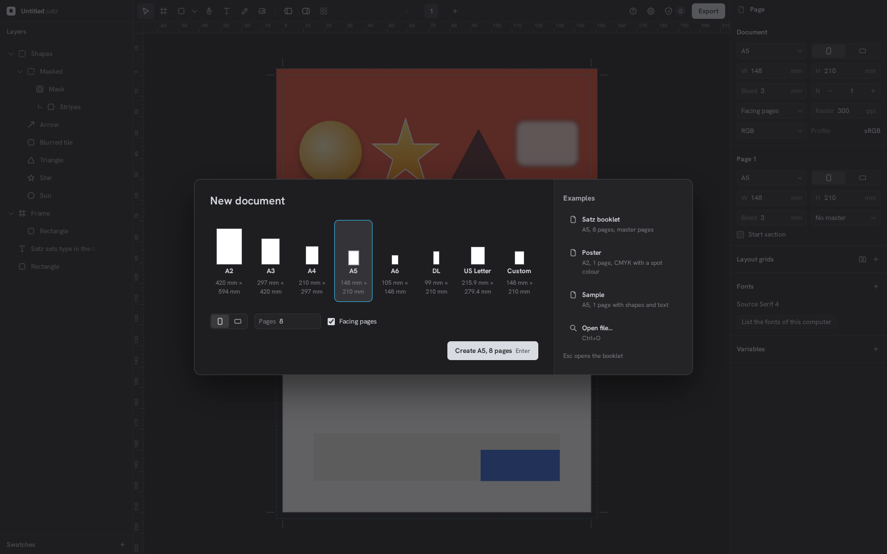
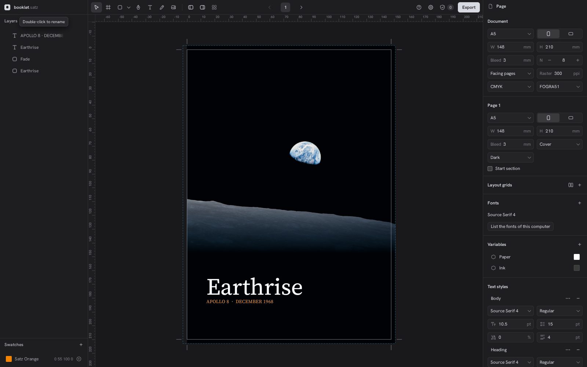
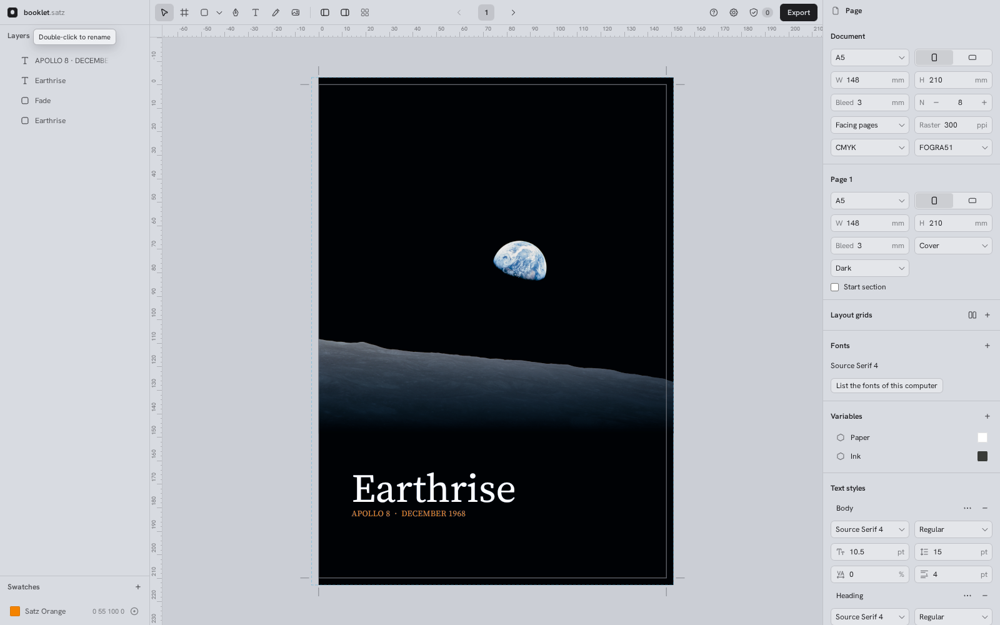
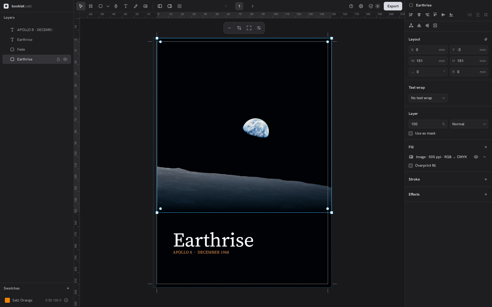
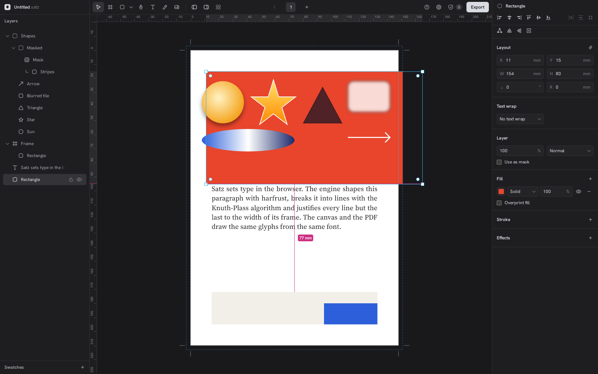
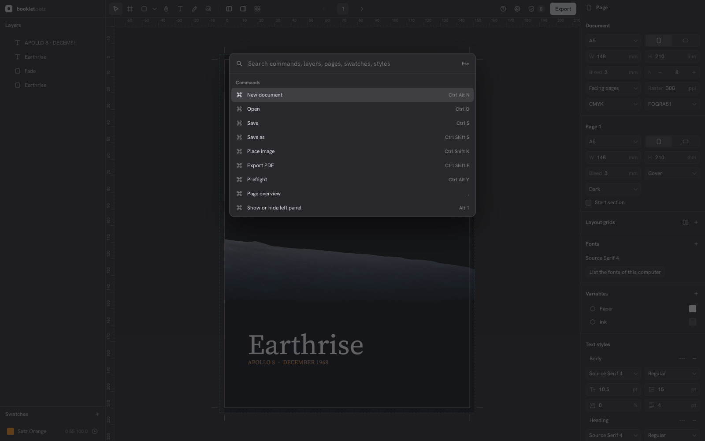
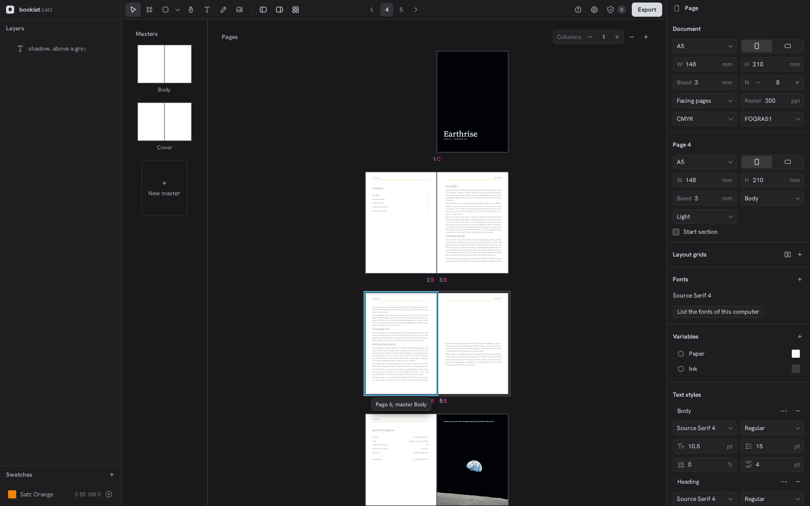
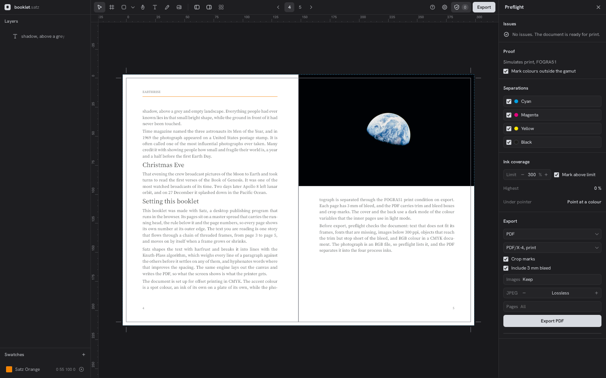

Warum Satz „okay“ aussieht und nicht „wow“
Stand 2026-10-05 · Grundlage: Build in web/dist, Chromium 1600×1000 (SwiftShader), dunkel und hell, Booklet, Poster und Sample. Screenshots in AGENT/ui-ux/wow/.
Kurzfassung. Funktion und Layout sind auf Figma-Niveau. Was fehlt, ist Rückmeldung mit Energie. Figma belohnt jede Aktion sichtbar: Blau für das aktive Werkzeug, Größen-Pille unter der Auswahl, gefüllter Primärbutton, Ebene leuchtet beim Hovern mit, Ansichten fliegen weich an ihren Platz. Satz hat diese Momente fast alle bewusst gedämpft: Akzent „selten“, Zustände nur als Grauflächen, Panel und Canvas fast gleich dunkel, eine Schriftgröße für alles. Jede dieser Entscheidungen ist für sich vernünftig. Zusammen wirkt es ruhig, korrekt und leblos.
Die Ursache ist also keine einzelne Schwäche, sondern die Vorgabe „Vercel-Minimalismus, Akzent selten“ selbst. Vercel ist eine Seite, die man liest. Ein Werkzeug, mit dem man arbeitet, braucht Freude beim Handeln, nicht nur Ruhe beim Ansehen.
Empfehlung: Neutral bleiben im Ruhezustand, aber im Moment der Handlung sichtbar Farbe und Bewegung zeigen. Als eigene Identität statt Figma-Blau: die Druckfarben CMY, die Satz schon halb nutzt (Cyan für Auswahl, Magenta für Hilfslinien). Das ist Satz' „Wow“ und keine Kopie.
1. Was Figma macht, das „wow“ auslöst
Bei Figma ist der Ruhezustand ebenfalls grau. Das „Wow“ kommt aus 5 Dingen:
- Farbe gehört der Handlung. Aktives Werkzeug = blau gefülltes Quadrat. Auswahl im Ebenen-Panel = blaue Zeile. Primärbutton = blau. Komponenten = lila. Man sieht sofort: das habe ich getan.
- Live-Werte am Objekt. Unter jeder Auswahl eine blaue Pille „240 × 120“, beim Ziehen rote Abstandsmaße, beim Drehen der Winkel. Das Werkzeug „spricht“ mit dem Nutzer.
- Flächen mit Tiefe. Panels (#2c2c2c) heben sich deutlich vom Canvas (#1e1e1e) ab; Inhalte liegen wie Objekte auf einer Bühne.
- Weiche Kamera. Zoom auf Auswahl, Shift 1, Seitenwechsel: animiert, kurz, nie blockierend.
- Erster Eindruck = Inhalt. Die Startseite zeigt große Thumbnails echter Dateien, nicht Formularfelder.
2. Befund in Satz, Bereich für Bereich
2.1 Startdialog – der erste Moment verschenkt den besten Inhalt

- Die Beispiele (Earthrise-Poster, Booklet) sind visuell großartig, werden aber als Text gelistet. Genau hier entsteht der „wow, damit arbeite ich gern“-Gedanke – und er wird verschenkt.
- Der Hintergrund zeigt ausgerechnet das bunte Sample hinter einem Scrim, nicht das Booklet, das Esc öffnet.
- Der Primärbutton „Create A5, 8 pages“ ist hellgrau auf dunkelgrau: korrekt, aber ohne Zug.
2.2 Editor-Grundzustand – alles hat dasselbe Gewicht

#1e1e21, Canvas #19191c – 2 % Helligkeitsunterschied. Die drei Bereiche verschmelzen zu einer Fläche.
#d8dbe1/#cbced5. Wirkt verwaschen statt hell; Figma Light ist weiß.- Keine Flächenhierarchie. Panel und Canvas sind praktisch gleich. Das Dokument liegt nicht auf einer Bühne, sondern in einem Loch. Die Seite hat keinen Schatten, also kein „Papier“.
- Keine Typohierarchie. Im CSS: 13× 11 px, 6× 12 px, alles andere Ausnahmen; 20 Regeln mit 600. Abschnittstitel („Document“, „Page 1“, „Fonts“) sind so groß wie Feldwerte. Das Auge findet keinen Einstieg.
- Rechtes Panel ohne Auswahl ist eine Wand. Document und Page wiederholen A5, W, H, Bleed. 20 Felder, alle gleich laut, Labels in
--text-3wirken deaktiviert. Figma zeigt ohne Auswahl wenig: Hintergrund, Variablen, Export. - Aktives Werkzeug ist ein grauer Hintergrund (
--selected= 12 % Vordergrund). Man muss hinsehen, um zu wissen, was aktiv ist. - Export-Button ist hellgrau gefüllt. Der wichtigste Knopf der App hat keine Farbe.
- Logo ist ein grauer Kreis im grauen Quadrat. Die Marke ist im Produkt unsichtbar.
2.3 Auswahl und Ziehen – hier ist Satz schon nah dran


- Die Magenta-Abstandspille zeigt, was funktioniert: Farbe in dem Moment, in dem der Nutzer handelt. Das ist das Muster für alles andere.
- Die Auswahlzeile im Ebenen-Panel ist nur grau hinterlegt. Bei Canvas-Hover leuchtet die Ebene im Panel nicht mit (Figma tut das in beide Richtungen).
- Keine Größe/Position am Objekt; man muss rechts ins Panel schauen.
2.4 Command Palette – eine Liste, kein Werkzeug

2.5 Seitenübersicht – die größte Bühne ist leer

- Die Übersicht ist der Ort, an dem ein Booklet als Ganzes wirken könnte: Doppelseiten im Raster, groß, wie ausgelegte Druckbögen. Stattdessen eine schmale Spalte.
- Die Master-Buchstaben („B“, „C“) in Magenta sind ein schönes Detail, gehen aber unter.
2.6 Preflight – hier ist bereits Charakter

Das bestätigt die Richtung: Druckfarben als visuelle Sprache machen Satz eigenständig. „No issues. The document is ready for print.“ ist ein Erfolgsmoment, der nur als graue Zeile erscheint – das wäre der Platz für ein grünes Häkchen mit kurzer Animation.
3. Warum es „langweilig“ wirkt, auf den Punkt
| Ursache | Wirkung | Beleg |
|---|---|---|
| Akzent nur für Fokus, Canvas-Auswahl, Drop-Marken | Die Chrome ist zu 99 % grau; Handlungen erzeugen keine sichtbare Belohnung | ui-preferences, .primary = var(--text) |
| Panel und Canvas fast gleich dunkel | Keine Tiefe, kein „Objekt auf Bühne“ | --bg #1e1e21 vs. --canvas #19191c |
| Eine Schriftgröße, ein Gewicht für Titel | Kein Blickeinstieg, alles gleich wichtig | 11/12 px, 600 überall |
| Wenig Bewegung in der Chrome | Wirkt statisch, „Formular“ statt „Instrument“ | 6 Transitions in 2990 Zeilen CSS |
| Inhalt wird nicht inszeniert | Der erste Eindruck ist ein Dialog, nicht das schöne Ergebnis | Startdialog, Übersicht |
| Helles Theme in Blaugrau | Wirkt matt statt frisch | --bg #d8dbe1 |
4. Was zu tun ist
Sortiert nach Wirkung pro Aufwand. Alles hält die bestehenden Regeln ein: Animationen blockieren nie, Canvas-Highlights bleiben ohne Animation.
P1Farbe gehört der Handlung
- Akzentregel ändern: „Ruhe grau, Handlung farbig.“ Cyan für: aktives Werkzeug (gefüllt, Icon weiß), ausgewählte Ebene im Panel (Cyan 15–20 % Fläche + Cyan-Icon), eingeschaltete Toggles/Checkboxen, fokussiertes Feld.
- Export-Button in Cyan gefüllt. Er ist die eine Aktion, auf die alles hinausläuft.
- Rollen der Druckfarben festlegen: Cyan = Auswahl und Fokus, Magenta = Messen und Hilfslinien (gibt es schon), Gelb = Warnung (Preflight). Ein Satz in CLAUDE.md, ein Ort im CSS.
P1Live-Werte am Objekt
- Cyan-Pille „148 × 80 mm“ unter jeder Auswahl, beim Skalieren live, beim Drehen der Winkel. Gleiche Form wie die vorhandene Magenta-Pille.
- Hover auf dem Canvas hebt die Ebenen-Zeile hervor und umgekehrt.
P1Startdialog zeigt Ergebnisse
- Beispiele als große Thumbnails (Poster, Booklet-Cover, Sample), gerendert vom eigenen Renderer, Hover hebt leicht an. Das ist der „wow, damit arbeite ich gern“-Moment.
- Im Hintergrund das Booklet zeigen, das Esc öffnet, nicht das Sample.
P2Tiefe und Papier
- Canvas deutlich von Panels absetzen: Canvas dunkler (≈
#121214) oder Panels heller (≈#242428), eine Haarlinie dazwischen. - Seiten bekommen einen weichen Schatten (im Renderer, nicht im Export). Dann ist die Seite Papier auf einem Tisch – passend zum Druck-Vokabular.
- Helles Theme: Panels fast weiß (
#f7f7f8), Canvas hellgrau. Blaugrau nur im Logo.
P2Typohierarchie im Panel
- Abschnittstitel 12 px/600 in voller Textfarbe, Feldlabels 11 px gedämpft, Werte 12 px normal. Mehr Abstand über Abschnitten als darunter.
- Ohne Auswahl: Page-Abschnitt nur mit dem, was sich vom Dokument unterscheidet (Master, Abschnittsbeginn). Keine doppelten A5/W/H/Bleed.
P2Bewegung in der Chrome
- Kamera: weich animiert bei Zoom auf Auswahl, Shift 1, Seitenwechsel (≈ 180 ms, unterbrechbar). Die Mechanik gibt es in
Canvas.tsxschon. - Panels: Abschnitte klappen mit Höhenübergang auf, „+“ fügt Zeilen mit kurzem Einblenden hinzu.
- Preflight „ready for print“: Häkchen zeichnet sich einmal kurz, Badge wird grün.
P3Kleinere Punkte
- Command Palette: eigenes Icon pro Befehl (die Werkzeug-Icons existieren schon).
- Übersicht: Doppelseiten im Raster über die volle Breite, Master-Thumbnails größer, damit ihr Inhalt erkennbar ist.
- Logo in Farbe (z. B. CMY-Passkreuz als Signatur), damit die Marke im Produkt auftaucht.
5. Ehrliche Einordnung
Die frühere Entscheidung „Akzent erscheint selten, Zustände über Graufüllungen“ ist der Hauptgrund für das fehlende „Wow“. Sie macht die UI ruhig und erwachsen, aber auch stumm. Die Druckfarben-Idee löst das, ohne Figma zu kopieren: Satz wird bunt genau dort, wo gedruckt, gemessen und ausgewählt wird. Mit P1 allein (Farbe für Handlungen, Größen-Pille, Thumbnails im Start) ändert sich der Eindruck am stärksten; P2 macht ihn hochwertig.
6. Was geprüft wurde
- Geprüft: Startdialog, Booklet Einzel- und Doppelseite, Seitenübersicht, Preflight mit Export, Command Palette, Kontextmenü, Poster, Sample mit Hover, Auswahl und Ziehen mit Hilfslinie, helles Theme. CSS-Tokens, Schriftgrößen und Transitions in
web/src/index.css. - Nicht geprüft: Farbwähler (Selektor griff nicht), Texteingabe, Pfadwerkzeug, Variablen-Dialog, echtes GPU-Rendering (SwiftShader), Bewegung (nur Standbilder). Figma-Vergleich aus Kenntnis von UI3, nicht per Screenshot nebeneinander.